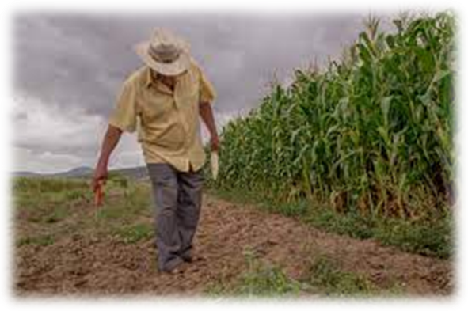

Sistema que recopila, organiza, administra, analiza, comparte y distribuye información agroambiental sustentable aplicada a nivel de detalle por parcela de siembra
InicioEl proyecto consiste en desarrollar un agrovisualizador ambiental y de riesgos aplicado en el territorio del Estado de México, mediante la programación de un código libre para el procesamiento y calculo ponderado variables agrícolas, ambientales y de riesgos, que pueda genera la consulta de información en un visualizador, para el seguimiento, monitoreo y la coherente toma de decisiones en los cultivos del campo mexicano. En este sentido se está impulsado como prueba piloto dos parcelas en el municipio de Atlacomulco de dos cultivos esenciales para la canasta básica alimentaria en México el Nopal y el Maíz, por lo cual médiate el uso de plataformas de consulta de percepción remota de acceso libre como lo es la misión Copernicus de la Agencia espacial europea, propiamente de la Misión Sentinel. La primera consta de la preparación de la información, trabajo de campo y obtención de imágenes satelitales y diseño de fichas geoespaciales. La segunda etapa consta de la preparación del algoritmo y código de preparación, la tercera es el diseño de interface y generación del visualizador para una práctica consulta e interpretación de información para los productores, autoridades y sociedad en general. En suma, se puede decir que es un completo sistema que permite recopilar, organizar, administrar, analizar, compartir y distribuir información agroambiental sustentable aplicado a nivel de detalle por parcela de siembra para poder acercar y reducir la brecha digital entre los productores y nuevos usuarios de las geotecnologías. En este sentido se pretende desarrollar una plataforma innovadora de practico acceso y navegación sustentado en Sistemas de Información Geográfica, precepción remota mediante la utilización de sentinel y uso de geotecnología como drones multiespectrales RGB y pueda ser utilizada por personas interesadas en acceder a nuevas geotecnologías para poder mejorar sus rendimientos productivos agrícolas basado en las metodologías de agricultura de precisión, para acercar el conocimiento geográfico al servicio de los sectores del gobierno, la empresa, la ciencia, la educación y los medios.
En la actualidad el acceso a la información en tiempo casi real en temáticas agrícolas, ambientales y de riesgos cobra vital importancia para la toma de decisión en materia monitoreo, seguimiento y mejoras para el impulso de rendimientos productivos más sostenibles individuo-planta-rendimiento cosecha por hectárea, , por lo cual generar información de salida rápida utilizando la tecnología de punta como son las imágenes provenientes de los sensores especializados como Sentinel legitima la adecuada toma de decisiones para garantizar una adecuada seguridad alimentaria y producción de cosechas sustentables bajo un nuevo enfoque que es la agroalimentación familiar.
Hoy en día en la era del acceso a la información mediante plataformas WEB y aplicaciones, hacen por un lado el reto el poder simplificar y generar opciones de consulta más prácticas y dinámicas, donde el poder desarrollar algoritmos que sinteticen información para la toma de decisiones articulada bajo las nuevas perspectivas de la pentahélice, entre sociedad, gobierno, empresa, academia y ambiente, por lo cual el poder generar un visualizador que procese imágenes satelitales para obtener datos de salida en tiempo casi real para el monitoreo de las parcelas desde la fenología y fitosanitario y se consolide como una herramienta de trabajo para el diseño de estrategias, planes y programas con miras a ofrecer información práctica para la toma de decisiones. El proyecto se sustenta en una alianza promotora del desarrollo entre la Universidad Autónoma del Estado de México a a través de la Facultad de geografía y la Agencia Espacial Mexicana del Gobierno de la republica de México, así como en coordinación del Gobierno Estatal de México a través de la Secretaria del campo y los productores de maíz y nopal en la entidad.
Desarrollar un visualizador en ambiente WEB que permita monitorear y consultar el proceso de siembra-cosecha del nopal y maíz en parcelas mediante el apoyo de imágenes Sentinel y el uso de herramientas geoteconológicas.
1. Generación de scorecards con información geoespacial de imágenes Sentinel y trabajo de campo para generar una caracterización de las parcelas de estudio.
2. Desarrollo de un algoritmo en código abierto que permita el monitoreo de los cultivos mediante el uso de herramientas geoteconológicas.
3. Implementación del algoritmo mediante un visualizador en ambiente WEB, a través de una interfaz amigable que permita la consulta, monitoreo y seguimiento de información referente a los cultivos.
-
Avances
Los proyectos se encuentran en fases avanzadas conforme al ciclo fenologico